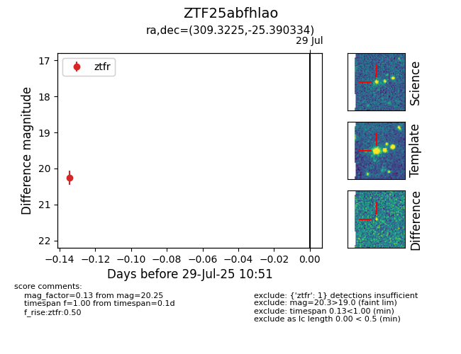

Target ZTF25abfhlao at 2025-07-29 10:51, see:
FINK: fink-portal.org/ZTF25abfhlao
Lasair: lasair-ztf.lsst.ac.uk/objects/ZTF25abfhlao
ALeRCE: alerce.online/object/ZTF25abfhlao
alt names
ZTF25abfhlao (ztf,fink)
coordinates:
equatorial (ra, dec) = (309.3225,-25.39033)
galactic (l, b) = (19.1724,-33.62854)
photometry
last ztfr=20.25
1 ztfr detections
